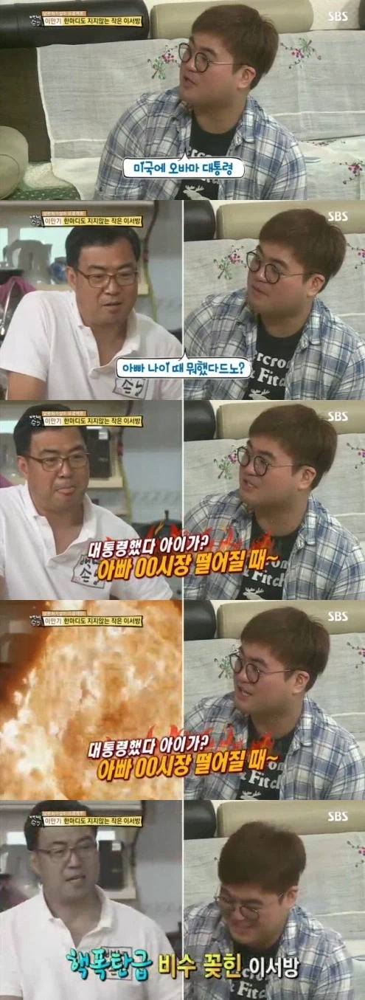

아들한테 말싸움 개털리는 이만기
댓글
도망칠 자신이 있으니까 하는거지


아들이 머리가 좋아보임
분열로 낳은거같네 걍 젊은 본인이네..
이만기 혼자낳았대???
똑같이 생겼네
울지 말어
이스방~
아들이 이만기 붕어빵이네 그냥
이만기 ㅇㄱㄸ아님?
아쉽게도 죄다 낙선해서 의원직한적이없다고 하네요 ㅋㅋㅋㅋㅋㅋ
이주일 조훈현 이순재도 잘만 개드립가는데 굳이?
비정치인의 삶과 정치인의 삶을 모두 겪은 인물의 경우 그 사람이 정치인 또는 정치인이 되려는 시도를 했을때의 과정가지고 떠드는거 아니면 옳그떠에 안걸려 예를들면 정주영 전 회장이나 고 이순재 선생님
사실 야인시대도 ㅇㄱㄸ임
그냥 어느정도 넘어가는 선이 있는거지
근데 자이언트나 공화국 시리즈는 안되는게 좀 모순이긴 한데..
아 그건 또 안돼? ㅋㅋㅋ
공화국은 대놓고 ㅇㄱㄸ고 자이언트도 그래서
ㅇㄱㄸ 기준이 갈등나고 분란날법한 인물이어야긴함.
이만기나 장미란이나 이순재 같이 정치 좀 연관됐어도 다른분야로 더 유명한 사람들은 뭐 분란 생길건 없으니 딱히 규제 안두더라
이만기를 정치인이라고 먼저 생각하는사람 있을까
비정치분야에서 오래 했고 정치인 할때 이력이 아니면 ㅇㅋ인걸로 알고 있긴 한데
저건 음.. ㅋㅋㅋㅋㅋ
이만기 vs 랄로 하면 누가 김해시장 될거같냐
제 3자가 되겠지
꼬소하이 쳐직이네
김해사람이 조스로비나
죠스는 그래도 쎄니깐
북항이 김해도 와아
이건 랄뚜기도 이만기 뽑지
그래도 강호동은 아들한테 지겠던데 이만기는 이길만큼 키워놨네 ㅋㅋ
깝죽거리지마라 새끼야